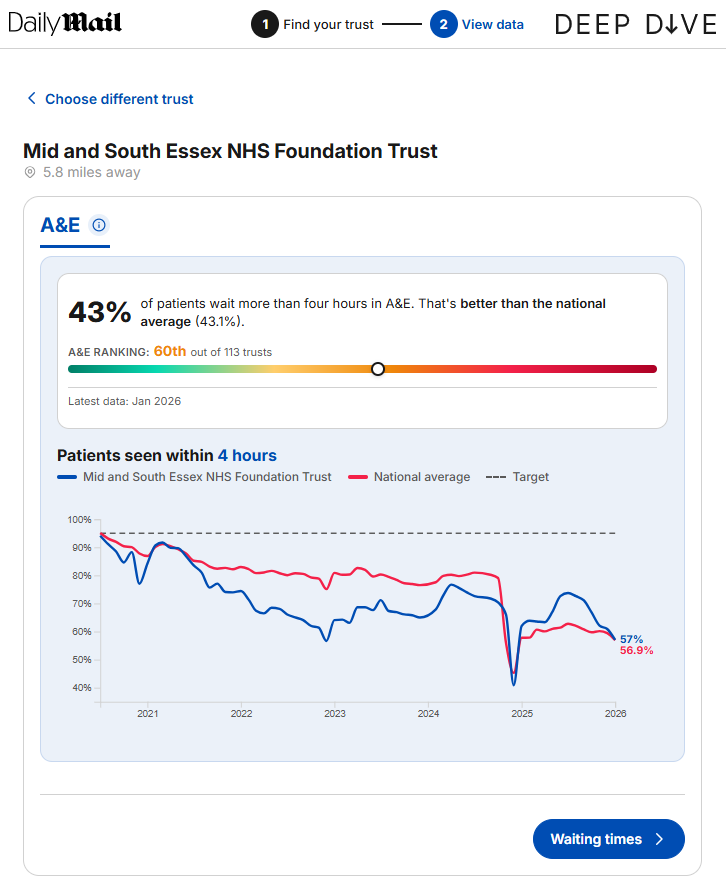
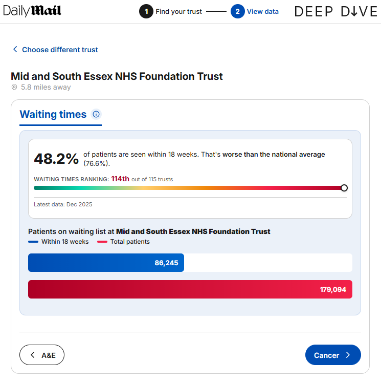

How is your NHS trust performing?
D3.js · JavaScript · Postcode API
National health data is vast and often lives in complex spreadsheets that can be difficult for the public to navigate. I wanted to make this information more accessible by building a postcode first tool that makes the data personal and easy to understand.
Instead of static images I used D3.js to build custom and responsive charts that react to the user. I integrated a postcode API so that when a reader enters their location the tool fetches the relevant data and updates the visualisations in real time.
The tool was a significant success for the Daily Mail's digital coverage. It reached a massive audience by generating over 160,000 unique views within the first 3 days of launch and maintained high levels of engagement as users explored their local health statistics.


